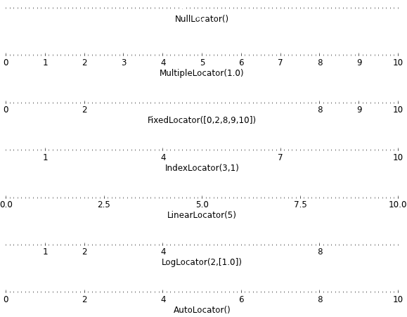
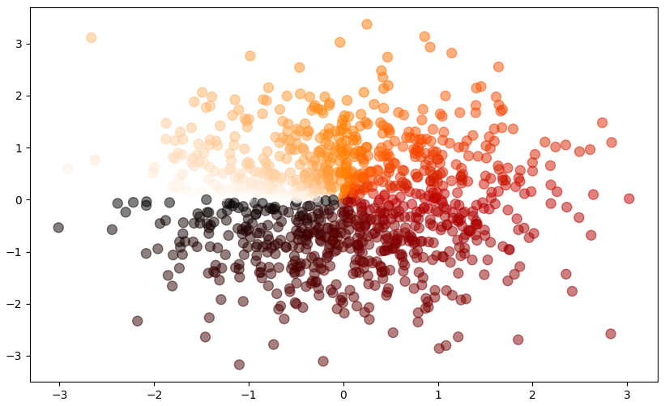

Title: Python 学习日记 - Python绘图基础 - Matplotlib
Author:Xueyong Lu First Edition: March - 2023
Python 学习日记 - Part 07
Python绘图基础 - Matplotlib
1. 2-D数据可视化
pylab：Matplotlib和Numpy两个库的结合体，提供了Matlab风格的接口和一些额外的便利功能
可以直接使用Matlab中的一些函数和变量，如
plot、subplot、title、xlabel、ylabel等等。此外，pylab模块也包括了Matplotlib和Numpy的大部分常用函数和变量，例如array、zeros、ones、linspace、pi等等ℹ
注意：使用pylab模块会导入很多变量和函数，这会导致命名空间污染和函数名冲突的问题 → 适合交互环境下使用xxxxxxxxxx21# 导入Matplotlib中的所有模块，包括numpy、matplotlib、pylab等2from pylab import *
pyplot：只导了Matplotlib库中的
pyplot模块，这个模块包含了绘图的核心函数和类，包括plot、scatter、hist、bar等等导入时需要使用命名空间访问其中的函数和变量
xxxxxxxxxx11import matplotlib.pyplot as plt
matplotlib：导入Matplotlib库本身，包括
pyplot、animation、cm、patches等等xxxxxxxxxx11import matplotlib as plt
1.1 绘制基本图形
1.1.1 基本函数绘制
xxxxxxxxxx101import numpy as np2import matplotlib.pyplot as plt3
4X = np.linspace(-np.pi, np.pi, 256, endpoint=True) # endpoint = True, 意味着为一闭区间，否则将不会包括最后一个采样点5C,S = np.cos(X), np.sin(X)6
7plt.plot(X,C)8plt.plot(X,S)9
10plt.show()
fig, ax = plt.subplots():创建了一个
Figure对象和一个Axes对象，并将这两个对象返回给变量fig和axFigure对象代表整个图形，而Axes对象代表具体的绘图区域ax来绘制具体的图形，比如通过调用ax.plot()或ax.scatter()方法。fig对象可以用来设置整个图形的属性，比如大小和标题
1.1.2 线型设置
xxxxxxxxxx61...2# 绘图窗口大小：10x6 英寸，分辨率803figure(figsize=(10,6), dpi=80)4plot(X, C, color="blue", linewidth=2.5, linestyle="-")5plot(X, S, color="red", linewidth=2.5, linestyle="-")6...颜色：Matplotlib库中，图形颜色支持以下方式定义：
英文单词/ 缩写：
color='__'bgrcmykw蓝色 绿色 红色 青色 品红 黄色 黑色 白色 bluegreenredcyanmagentayellowblackwhiteHTML十六进制颜色：
color='#008000'RGBA颜色：
color=(0.5, 0.5, 0.5, 1)→ 分别对应RGB的三个值和透明度
线型：
linestyle=‘__’- - - : -. 实线 虚线 点线 点划线 soliddasheddotteddashdot线宽：
linewidth=2.5(px)
1.1.3 坐标轴设置
设置坐标轴范围
xxxxxxxxxx81xmin ,xmax = X.min(), X.max()2ymin, ymax = Y.min(), Y.max()34dx = (xmax - xmin) * 0.25dy = (ymax - ymin) * 0.267plt.xlim(xmin - dx, xmax + dx)8plt.ylim(ymin - dy, ymax + dy)设置坐标轴刻度
xticks, yticks：指定刻度的标签和属性的方法，如刻度标签的文本、大小、颜色等属性xxxxxxxxxx41···2xticks( [-np.pi, -np.pi/2, 0, np.pi/2, np.pi] )3yticks( [-1, 0, +1] )4...Tick Locators：指定刻度的位置，是
matplotlib库内部使用的类，需要调用相应的Locator子类进行实例化xxxxxxxxxx151import matplotlib.pyplot as plt2import matplotlib.ticker as ticker3import numpy as np45fig, ax = plt.subplots()6x = np.arange(0, 10, 0.1)7y = np.sin(x)89ax.plot(x, y)1011# 设置 x 轴的 tick locator12ax.xaxis.set_major_locator(ticker.MultipleLocator(1.0))13ax.xaxis.set_minor_locator(ticker.MultipleLocator(0.5))1415plt.show()
设置坐标轴标签
xxxxxxxxxx71...2xticks( [-np.pi, -np.pi/2, 0, np.pi/2, np.pi],3[r'$-\pi$', r'$-\pi/2$', r'$0$', r'$+\pi/2$', r'$+\pi$'] )45yticks( [-1, 0, +1],6[r'$-1$', r'$0$', r'$+1$'] )7...
脊柱平移
脊柱：坐标轴和上面的记号Splines
xxxxxxxxxx151import numpy as np2import matplotlib.pyplot as plt34...5ax = gca()67# 将脊柱放在图的中间8ax.spines['right'].set_color('none') # 右脊柱设置为无色9ax.spines['top'].set_color('none') # 上脊柱设置为无色10ax.spines['bottom'].set_position(('data',0)) # 下脊柱调整到数据空间的'0'点11ax.spines['left'].set_position(('data',0)) # 上脊柱调整到数据空间的'0'点1213ax.xaxis.set_ticks_position('bottom')14ax.yaxis.set_ticks_position('left')15...
添加图例
xxxxxxxxxx61...2plot(X, C, color="blue", linewidth=2.5, linestyle="-", label="cosine")3plot(X, S, color="red", linewidth=2.5, linestyle="-", label="sine")45plt.legend(loc='upper left')6...右上 左上 左下 右下 正右 中央偏左 中央偏右 中央偏下 中央偏下 正中央 upper right upper left lower left lower right right center left center right lower center upper center center 1 2 3 4 5 6 7 8 9 10 格式：
plt.legend(loc='upper right')或者plt.legend(loc=1)
数据点标注
scatter(...)绘制单个点：
[x, ],[y, ]，或者[, x],[, y]绘制线段：
[x1, x2],[y1, y2]绘制散点图：
[x1, x2, x3, ...],[y1, y2, y3, ...]
annotate(...)r'$...$'：注释的文本，其中 $符号表示支持 LaTeX 格式的公式渲染xy=(, )：注释箭头所指向的点的坐标xycoords='data'：指定 xy 坐标系的类型，这里表示使用数据坐标系xytext=(+10, +30)：注释文本的坐标相对于点的坐标的偏移量textcoords='offset points'：指定 xytext 坐标系的类型，这里表示使用偏移坐标系fontsize=16：注释文本字体大小arrowprops=dict(arrowstyle="->", connectionstyle="arc3,rad=.2")：注释箭头的样式设置，包括箭头形状和连接线样式
xxxxxxxxxx131···2# 绘制虚线段（垂直）3plot([t,t],[0,np.cos(t)], color ='blue', linewidth=2.5, linestyle="--")45# 坐标(t, cos(t))，点的大小为50pt6scatter([t,],[np.cos(t),], 50, color ='blue')78# 数据标签9annotate(r'$支持Latex格式公式}$',10xy=(t, np.sin(t)), xycoords='data',11xytext=(+10, +30), textcoords='offset points', fontsize=16,12arrowprops=dict(arrowstyle="->", connectionstyle="arc3,rad=.2"))13···
其它优化：阻挡元素变透明
xxxxxxxxxx51...2for label in ax.get_xticklabels() + ax.get_yticklabels():3label.set_fontsize(16)4label.set_bbox(dict(facecolor='white', edgecolor='None', alpha=0.65 ))5...使被图像挡住的坐标轴标签加一个背景，参数中有填充颜色、边界颜色和透明度可调

1.1.4 图像和子图
图像：以[Figure #]为标题的那些窗口。图像编号从 1 开始，与 MATLAB 的风格一致
参数 默认值 描述 num1图像的数量 figsizefigure.figsize图像的长和宽（英寸） dpifigure.dpi分辨率（点/英寸） facecolorfigure.facecolor绘图区的背景颜色 edgecolorfigure.edgecolor绘图区的边缘颜色 frameonTrue是否绘制图像边缘 子图
subplot(m,n,i)：参考Matlab语法gridspec：import matplotlib.gridspec as gridspecxxxxxxxxxx271from pylab import * # 交互环境，未指明命名空间2import matplotlib.gridspec as gridspec34G = gridspec.GridSpec(3, 3) # 创建一个3行3列的网格，即总共9个子图56axes_1 = subplot(G[0, :]) # 第一行的所有列7xticks([]), yticks([])8text(0.5,0.5, 'Axes 1',ha='center',va='center',size=24,alpha=.5)910axes_2 = subplot(G[1,:-1]) # 第二行的第1列到第2列, G[1, 0:2]11xticks([]), yticks([])12text(0.5,0.5, 'Axes 2',ha='center',va='center',size=24,alpha=.5)1314axes_3 = subplot(G[1:, -1]) # 第二行的最后一列和第三行, G[1:, 2]15xticks([]), yticks([])16text(0.5,0.5, 'Axes 3',ha='center',va='center',size=24,alpha=.5)1718axes_4 = subplot(G[-1,0]) # 最后一行的第1列, G[2, 0]19xticks([]), yticks([])20text(0.5,0.5, 'Axes 4',ha='center',va='center',size=24,alpha=.5)2122axes_5 = subplot(G[-1,-2]) # 最后一行的第2列, G[2, 1]23xticks([]), yticks([])24text(0.5,0.5, 'Axes 5',ha='center',va='center',size=24,alpha=.5)2526#plt.savefig('../figures/gridspec.png', dpi=64)27show()
坐标轴
将子图放在任意位置
xxxxxxxxxx231from pylab import *23# 左下角(0.1, 0.1)， 高度,宽度=0.5,0.5 的子图4axes([0.1, 0.1, .5, .5])5# x,y刻度为空6xticks([]), yticks([])7# (0.1, 0.1)处放置文本框，ha:水平左对齐，va:垂直居中8text(0.1, 0.1, 'axes([0.1,0.1,0.5,0.5])', ha='left', va='center', size=16, alpha=.5)910axes([0.2, 0.2, .5, .5])11xticks([]), yticks([])12text(0.1, 0.1, 'axes([0.2,0.2,.5,.5])', ha='left', va='center', size=16, alpha=.5)1314axes([0.3, 0.3, .5, .5])15xticks([]), yticks([])16text(0.1, 0.1, 'axes([0.3,0.3,.5,.5])', ha='left', va='center', size=16, alpha=.5)1718axes([0.4, 0.4, .5, .5])19xticks([]), yticks([])20text(0.1, 0.1, 'axes([0.4,0.4,.5,.5])', ha='left', va='center', size=16, alpha=.5)2122# plt.savefig("../figures/axes-2.png",dpi=64)23show()
1.1.5 循环绘制多张子图
用enumerate()函数获得当前迭代的索引
i和变量arr用
axs[i]访问每一个子图用
imshow()方法显示数组arrxxxxxxxxxx41fig, axs = plt.subplots(1, 3, figsize=(12, 3.5))2for i, arr in enumerate([a, b, c]):3axs[i].imshow(np.array(arr).reshape(5,6),cmap='plasma')4plt.show()
1.1.6 示例：
图像填充
xxxxxxxxxx121from pylab import *23n = 2564X = np.linspace(-np.pi, np.pi, n, endpoint=True)5Y1 = 6 * np.sin(np.pi * X)6Y2 = 2 * np.cos(np.pi * X) + 5 * np.cos(5 * np.pi * X)78plt.axes([0.025, 0.025, 0.95, 0.95])910plt.plot(X, Y2, color='blue', alpha=1.00)11plt.fill_between(X, Y1, Y2, Y2 > Y1, color='blue', alpha=.25)12plt.fill_between(X, Y1, Y2, Y2 < Y1, color='red', alpha=.25)
散点图
xxxxxxxxxx141import numpy as np2import matplotlib.pyplot as plt34n = 10245X = np.random.normal(0, 1, n)6Y = np.random.normal(0, 1, n)7T = np.arctan2(Y, X)89plt.axes([0.025, 0.025, 0.95, 0.95])10plt.scatter(X, Y, s=75, c=T, cmap='gist_heat', alpha=.5)1112# plt.scatter(X, Y, s=散点大小，c=散点颜色, alpha=透明度)13# 通过arctan2函数将(X,Y)数组转换为(0~2pi)的角度值14# 将角度值用颜色映射函数映射到颜色上ℹ注意：
plt.axes也会打开一个画布（Figure）
cmap='__'为要映射到的 Color bar of Matplotlib
{kind=link}
2. 3-D数据可视化
2.1 等高图 (Equivalent)
xxxxxxxxxx211def f(x, y):2 return (1 - x / 2 + x ** 5 + y ** 3) * np.exp(-x ** 2 - y ** 2) # x^5 = x**53
4def contour_ex():5 n = 2566 x = np.linspace(-3, 3, n)7 y = np.linspace(-3, 3, n)8 X, Y = np.meshgrid(x, y)9
10 plt.axes([0.025, 0.025, 0.95, 0.95])11 12 # 8个等高线级别，透明度0.75，色条：热度图13 plt.contourf(X, Y, f(X, Y), 8, alpha=.75, cmap=plt.cm.hot)14 # 设置等高线颜色，线宽15 C = plt.contour(X, Y, f(X, Y), 8, colors='black', linewidth=.5)16 # 添加等高线标签，在等高线内部17 plt.clabel(C, inline=1, fontsize=10)18
19 plt.xticks([]), plt.yticks([])20 # savefig('../figures/contour_ex.png',dpi=48)21 plt.show()
2.2 3D (Waterfall)
xxxxxxxxxx161from mpl_toolkits.mplot3d import Axes3D2
3fig = plt.figure()4ax = Axes3D(fig)5X = np.arange(-4, 4, 0.25)6Y = np.arange(-4, 4, 0.25)7X, Y = np.meshgrid(X, Y)8R = np.sqrt(X**2 + Y**2)9Z = np.sin(R)10
11ax.plot_surface(X, Y, Z, rstride=1, cstride=1, cmap=plt.cm.hot)12ax.contourf(X, Y, Z, zdir='z', offset=-2, cmap=plt.cm.hot)13ax.set_zlim(-2,2)14
15# savefig('../figures/plot3d_ex.png',dpi=48)16plt.show()
3. 其他图像
3.1 条形图 (Histogram)
xxxxxxxxxx211n = 122
3X = np.arange(n) # [0 1 2 3 ... 11]等差数组4Y1 = (1 - X / float(n)) * np.random.uniform(0.5, 1.0, n)5Y2 = (1 - X / float(n)) * np.random.uniform(0.5, 1.0, n)6
7plt.axes([0.025, 0.025, 0.95, 0.95])8plt.bar(X, +Y1, width=.85, facecolor='#9999ff', edgecolor='white')9plt.bar(X, -Y2, width=.85, facecolor='#ff9999', edgecolor='white')10
11for x, y in zip(X, Y1):12 plt.text(x, y + 0.05, '%.2f' % y, ha='center', va='bottom')13
14for x, y in zip(X, Y2):15 plt.text(x, -y - 0.05, '%.2f' % y, ha='center', va='top')16
17plt.xlim(-.5, n), plt.xticks([])18plt.ylim(-1.25, +1.25), plt.yticks([])19
20# savefig('../figures/bar_ex.png', dpi=48)21plt.show()
3.2 灰度图 (Gray diagram)
xxxxxxxxxx191def f(x, y):2 return (1 - x / 2 + x ** 5 + y ** 3) * np.exp(-x ** 2 - y ** 2) # x^5 = x**53
4def imshow_ex():5 n = 106 x = np.linspace(-3, 3, int(3.5*n))7 y = np.linspace(-3, 3, int(3.0*n))8 X, Y = np.meshgrid(x, y)9 Z = f(X, Y)10
11 plt.axes([0.025, 0.025, 0.95, 0.95])12 # 插值方式：bicubic，颜色图谱：bone(黑白渐变)，lower:左下角为原点13 plt.imshow(Z, interpolation='bicubic', cmap='bone', origin='lower')14 # 颜色条的长度为原始长度的0.92倍15 plt.colorbar(shrink=.92)16
17 plt.xticks([]), plt.yticks([])18 # savefig('../figures/imshow_ex.png', dpi=48)19 plt.show()
3.3 饼状图 (Pie diagram)
xxxxxxxxxx161n = 202Z = np.ones(n)3Z[-1] *= 24
5plt.axes([0.025, 0.025, 0.95, 0.95])6
7plt.pie(Z, explode=Z * .05, colors=['%f' % (i / float(n)) for i in range(n)],8 wedgeprops={"linewidth": 1, "edgecolor": "black"})9
10# plt.gca()返回当前axes对象11# set_aspect('equal')设置x和y轴的比例相等，使得图形在两个方向上看起来是等比例的12plt.gca().set_aspect('equal')13plt.xticks([]), plt.yticks([])14
15# savefig('../figures/pie_ex.png',dpi=48)16plt.show()
3.4 量场图 (Quiver plots)
xxxxxxxxxx171n = 8 # 整数，用于定义网格大小2X,Y = np.mgrid[0:n,0:n] # 由np.mgrid生成的网格坐标矩阵3T = np.arctan2(Y-n/2.0, X-n/2.0) # 计算出的每个网格点的极角（弧度），用于表示每个向量箭头的方向4R = 10+np.sqrt((Y-n/2.0)**2+(X-n/2.0)**2) # 计算出的每个网格点的极径，用于表示每个向量箭头的长度5U,V = R*np.cos(T), R*np.sin(T) # 计算出的每个向量箭头的水平和垂直分量6
7plt.axes([0.025,0.025,0.95,0.95])8
9# X,Y网格坐标矩阵; U,V向量的水平和垂直分量; R可选参数，用于表示每个向量箭头的长度。如果未指定，则默认为110plt.quiver(X,Y,U,V,R, alpha=.5)11plt.quiver(X,Y,U,V, edgecolor='k', facecolor='None', linewidth=.5)12
13plt.xlim(-1,n), plt.xticks([])14plt.ylim(-1,n), plt.yticks([])15
16# savefig('../figures/quiver_ex.png',dpi=48)17plt.show()
3.5 网格 (Grid)
xxxxxxxxxx201ax = plt.axes([0.025, 0.025, 0.95, 0.95])2
3ax.set_xlim(0, 4)4ax.set_ylim(0, 3)5# Tick Locator6ax.xaxis.set_major_locator(plt.MultipleLocator(1.0))7ax.xaxis.set_minor_locator(plt.MultipleLocator(0.1))8ax.yaxis.set_major_locator(plt.MultipleLocator(1.0))9ax.yaxis.set_minor_locator(plt.MultipleLocator(0.1))10
11ax.grid(which='major', axis='x', linewidth=0.75, linestyle='-', color='0.75')12ax.grid(which='minor', axis='x', linewidth=0.25, linestyle='-', color='0.75')13ax.grid(which='major', axis='y', linewidth=0.75, linestyle='-', color='0.75')14ax.grid(which='minor', axis='y', linewidth=0.25, linestyle='-', color='0.75')15
16ax.set_xticklabels([])17ax.set_yticklabels([])18
19# savefig('../figures/grid_ex.png',dpi=48)20plt.show()
3.6 极轴图 (Polar axis diagram)
xxxxxxxxxx171ax = plt.axes([0.025,0.025,0.95,0.95], polar=True)2
3N = 204# 等差数列5theta = np.arange(0.0, 2*np.pi, 2*np.pi/N)6radii = 10*np.random.rand(N)7width = np.pi/4*np.random.rand(N)8bars = plt.bar(theta, radii, width=width, bottom=0.0)9
10for r,bar in zip(radii, bars):11 bar.set_facecolor( plt.cm.jet(r/10.))12 bar.set_alpha(0.5)13
14ax.set_xticklabels([])15ax.set_yticklabels([])16# savefig('../figures/polar_ex.png',dpi=48)17plt.show()
3.7 手稿图 (Manuscript)
xxxxxxxxxx231eqs = []2 eqs.append((3 r"$W^{3\beta}_{\delta_1 \rho_1 \sigma_2} = U^{3\beta}_{\delta_1 \rho_1} + \frac{1}{8 \pi 2} \int^{\alpha_2}_{\alpha_2} d \alpha^\prime_2 \left[\frac{ U^{2\beta}_{\delta_1 \rho_1} - \alpha^\prime_2U^{1\beta}_{\rho_1 \sigma_2} }{U^{0\beta}_{\rho_1 \sigma_2}}\right]$"))4 eqs.append(5 (r"$\frac{d\rho}{d t} + \rho \vec{v}\cdot\nabla\vec{v} = -\nabla p + \mu\nabla^2 \vec{v} + \rho \vec{g}$"))6 eqs.append((r"$\int_{-\infty}^\infty e^{-x^2}dx=\sqrt{\pi}$"))7 eqs.append((r"$E = mc^2 = \sqrt{{m_0}^2c^4 + p^2c^2}$"))8 eqs.append((r"$F_G = G\frac{m_1m_2}{r^2}$"))9
10 plt.axes([0.025, 0.025, 0.95, 0.95])11
12 for i in range(24):13 index = np.random.randint(0, len(eqs))14 eq = eqs[index]15 size = np.random.uniform(12, 32)16 x, y = np.random.uniform(0, 1, 2)17 alpha = np.random.uniform(0.25, .75)18 plt.text(x, y, eq, ha='center', va='center', color="#11557c", alpha=alpha,19 transform=plt.gca().transAxes, fontsize=size, clip_on=True)20
21 plt.xticks([]), plt.yticks([])22 # savefig('../figures/text_ex.png',dpi=48)23 plt.show()